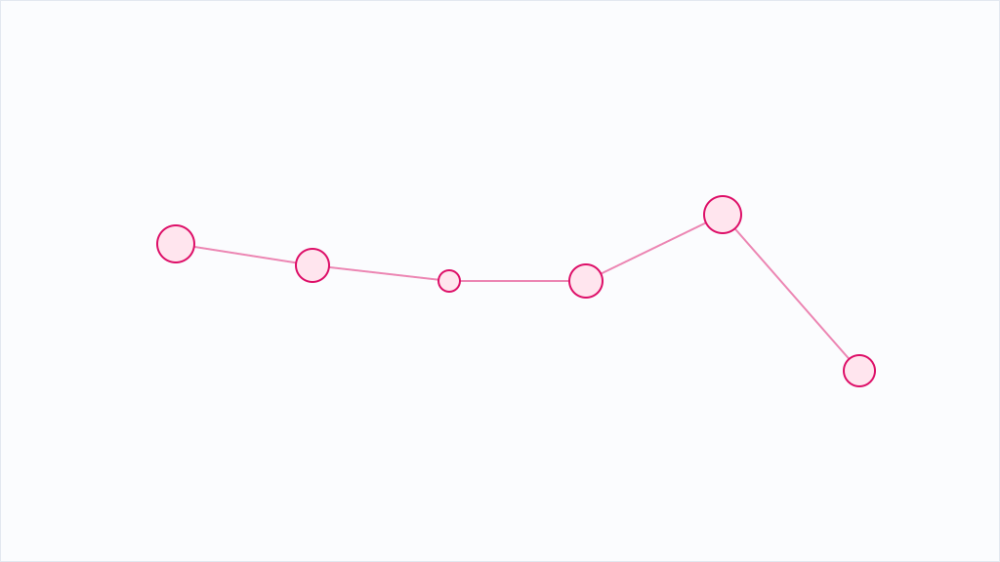

AIエージェントに「投げる／自分でやる」の線引きを、数字で決める

コーディングエージェントを複数併用する際、最大の悩みは「この作業を投げるべきか、自分でやるべきか」という判断だ。この判断そのものが重く、迷っている時間が損になるため、記事の著者はそれを数字で落とした。結論は単純で、指示文の説明コストが成果物を上回るなら投げるな、ということである。往復オーバーヘッド（説明、待ち、読み解きの3つ）を考慮すれば、投げる方が速い領域と、自分でやった方が速い領域が明確に分かれる。
具体的には7つの委譲条件が挙げられている。同じターンでファイル編集が3回以上になる見込みがあれば投げる、100行以上の新規生成なら投げる、既存ファイルの全文書き換えなら投げる。これらはすべて「司令塔側の残り容量を圧迫する作業」である。また、同じ形のものを5個以上作る場合も投げてよい。これは、往復オーバーヘッドが大量生成では逆に小さくなることを意味している。さらに、同じ問題で2回連続して失敗したら、3回目は手を動かさずに別系統のモデルに投げる。失敗の原因は「見立てそのものがずれている合図」だからだ。
AIを「使う側」の判断精度は、AIの性能そのものと同じくらい大切だ。いつ投げるか、何を先に決めるか、役割をどう固定するか——これらは、組織のAI活用成熟度を数値化したものだと言える。設定ファイルの書き換えを「お願い」したり、大量エンドポイント生成を「自分で」やったりする判断の甘さは、テクノロジーの問題ではなく、運用設計の問題として顕在化する。つまり、AIの導入効果は、AIそのものではなく、「人間がどこまで冷徹に役割を分けられるか」で決まるということだ。
※ 上記は配信元記事をもとにAIの鬼編集部が要約・再構成したものです。正確な内容は出典元をご確認ください。
このニュースの全文は、配信元でお読みいただけます。 Zenn AIで元記事を読む →
編集部の実践記録から

職場のAI利用は「広がる」から「使い込む」へ移ったのか ― 毎日利用12%・週数回以上26%をどう読むか
Gallupが米国就業成人22,368人に実施した2025年Q4調査で、毎日AIを使う就業者は12%、週数回以上は26%に増える一方、利用者全体の割合は横ばいでした。経営層69%対一般社員40%、リモート可能職66%対非リモート職32%という偏りも含めて、中小企業がどう読むべきかを整理します。
続きを読む →
情シスの仕事はAIでどこまで速くなるのか ― 181名のランダム化比較試験が示した「効く業務」と「25%遅くなる業務」
Microsoftが181名を対象に行ったランダム化比較試験で、情シス業務の正答精度は平均34.53%改善しました。ただし効いたのは自由記述型の作業で、多肢選択型は精度が有意に上がらず所要時間は25.13%増えています。発信元が製品提供者本人である点も含め、業務単位の線引きを整理します。
続きを読む →
安いから中国製モデル、は成立するのか？ 米国政府機関の実測でGPT-5-miniが平均35%安かった
米国商務省NIST傘下のCAISIがDeepSeekの各モデルを実測しました。同等性能に要した費用はGPT-5-miniが平均35%安く、エージェント乗っ取りではDeepSeek最良モデルでも認証情報の窃取が37%の試行で発生。トークン単価ではなく総額と乗っ取り耐性で選ぶべき理由を、評価の立場性と限界も含めて整理します。
続きを読む →